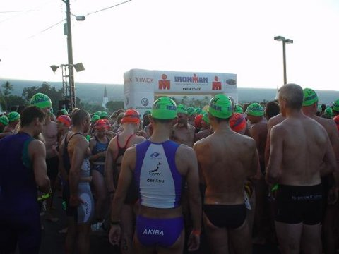

不安、いっぱい
天気がいいだろうか
波は高いだろうか
風が強いだろうか
体調が悪くならないだろうか
事故にならないだろうか
無理に突っ込みすぎてしまうだろうか
競技規則違反にならないだろうか
パンクしないだろうか
メカニック・トラブルは起こらないだろうか
納得できるレースができるだろうか
元気に帰ってこられるだろうか
不安を超えるために
レース・スタートが 7 時だと 3 時ごろ起床
ゆっくりと朝食を取る
十分なエネルギーを生むように
おなかを壊さないように
入念なストレッチ
一日仕事に向けて
体の調子を見るように
じっくりとじっくりと
会場に向かって事務手続き
ナンバーをマジックで記入する
タイミングチップを取り付ける
自転車の状態を確認する
タイヤに空気を入れる
一日のサプリメントや食事を用意
簡単なウォーミングアップ
さらにストレッチ
スタート地点まで向かう
my fear
if there is bad weather
if the ocean is not calm
strong winds which were in Hawaiian legends blow
if my physical condition worsens
if I am in an accident
if I can't keep running
if I impose a penalty from a marshal
if a tire blows out
if mechanical trouble occurs
I should go back.
for conquering my fear
I get up at 3 a.m.
I have an energy breakfast
that will not upset my stomach
I do stretching exercises
slowly, slowly
wonder to work all day
and check my condition.
I go to the registration desk for the race.
Volunteers write my race number on my shoulders.
I check my bike and its gears.
I prepare my food for the race.
I warm up
and do stretching exercises.
I go to the starting gate.